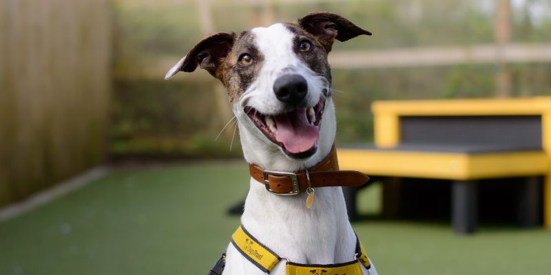

Dog Article
Led by Dogs Trust in collaboration with researchers from the University of Leeds and the University of Exeter, the research combined data from a breed registry, vet organisations, pet insurance companies, an academic institution and animal welfare charities in a UK-first to reach a more accurate number. Accounting for the UK's dog population could help those involved in dog welfare to plan for future canine care needs and pinpoint areas of focus. Telford was revealed as the top dog hotspot in the country, with 8.2 dogs per 20 people. Harrogate had the joint-third highest ratio in the country with 7.4 dogs per 20 people. The lowest densities of dogs were reported for six areas of London, covering postcode areas N, E, SW, WC, W and UB, with approximately one dog for every 20 people. The researchers used data from 2019 to complete their first estimate, but this new approach puts a framework in place so they can track the dog population over time, making data available about the popularity of specific breeds and dog hotspots. Dr David Wong, Associate Professor of Health Data Science and Health Informatics at the University of Leeds School of Medicine, was an author on the study. He said: “This groundbreaking study sheds new light on the UK's dog population and density. Supporting the research team to develop a better understanding of our canine companions has been an incredibly rewarding experience. Dogs Trust have excelled in bringing together a diverse range of stakeholders and experts to deliver insights that will underpin research for many years to come.” Dr Kirsten McMillan, Deputy Head of Research at Dogs Trust and lead author, said: “The UK is well known for being a nation of dog lovers, but it turns out we may have significantly underestimated how many dogs are out there by over four million! This inaccuracy can have serious implications as it affects important statistics like how many dogs of different breeds or sizes live in certain regions, how the dog population grows each year, and the overall trends in dog ownership. “This new study is the most comprehensive analysis of the dog population in the UK to date.
It's packed with valuable insights for everyone involved in dog welfare and our friends within the welfare sector, veterinary care, epidemiological, and business fields. With plans to replicate this study in the future, we'll be able to track changes in dog populations over time, helping us better understand the changing population, including breed popularity and its impact on welfare. “It's been fascinating to uncover stark differences in dog density throughout the UK, with Telford and Darlington emerging as leaders, boasting the highest dog-to-human ratios. These and future statistics provide valuable insights into regional trends and the dynamics of pet ownership across the country.” Dr Xavier Harrison, Senior Lecturer at the University of Exeter, said: “Knowing how many dogs there are in the UK is important, but isn't necessarily straightforward to calculate. Up to date estimates of the size and distribution of the dog population within the UK, and how these trends vary by breed and age, allow us to highlight where and why certain breeds are more popular. More importantly, they provide a solid baseline for investigating what factors that may drive changes in dog ownership in the future, with consequences for human and pet health.” Further information Top image credit: Dogs Trust Estimation of the size, density, and demographic distribution of the UK pet dog population in 2019 was published in Nature Scientific Reports. Data sources included a breed registry (45.0%: The Kennel Club (KC), UK), veterinary corporations (26.5%: PDSA; Medivet; Vets4Pets), pet insurance companies (17.1%: The Insurance Emporium (The Equine and Livestock Insurance Company Limited); NCI Insurance; Cardif Pinnacle; Agria Pet Insurance; Direct Line), animal welfare charities (5.9%: Battersea Dogs and Cats Home; Blue Cross; SSPCA; Raystede; Wood Green, The Animals Charity; Edinburgh Dog and Cat Home; Mayhew) and an academic institution (5.5%: SAVSNET - Small Animal Veterinary Surveillance Network, University of Liverpool). For media enquiries, please contact Mia Saunders in the University of Leeds press office via m.saunders@leeds.ac.uk.